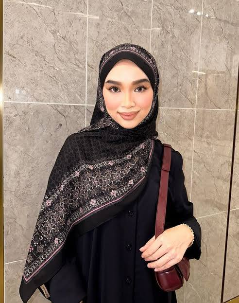
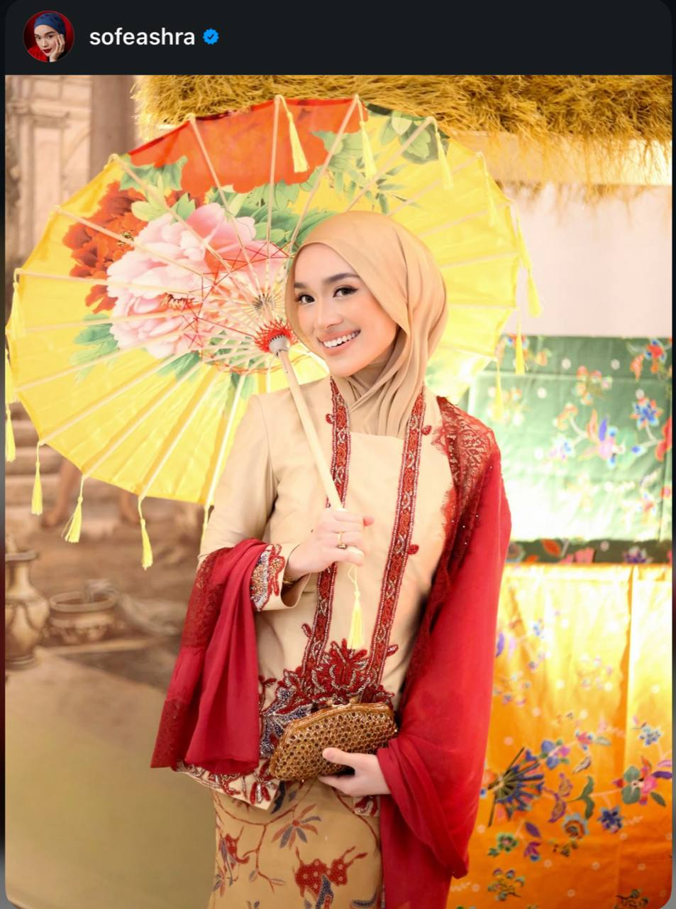
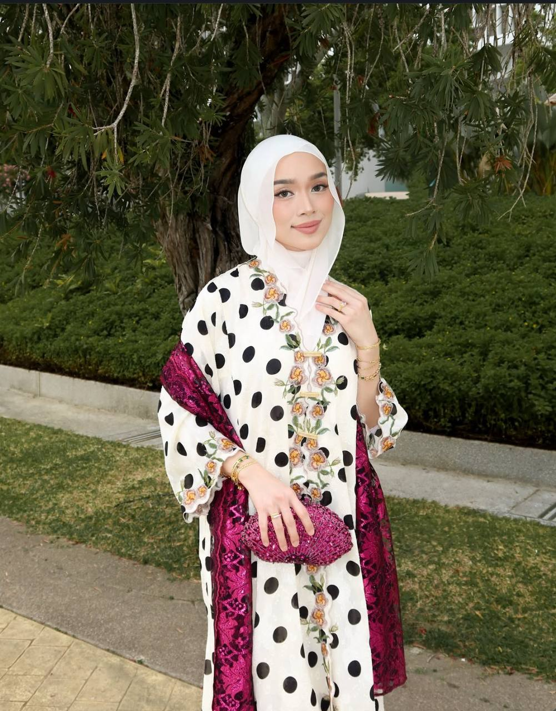
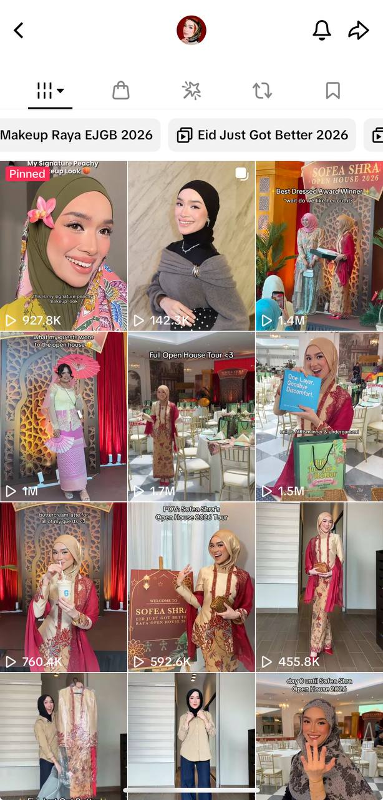
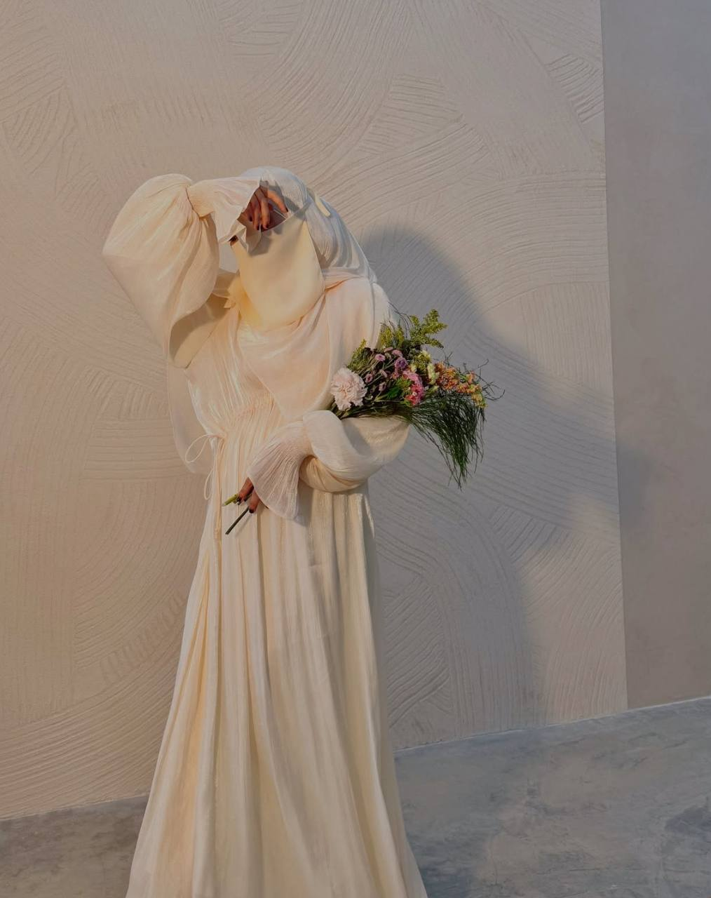
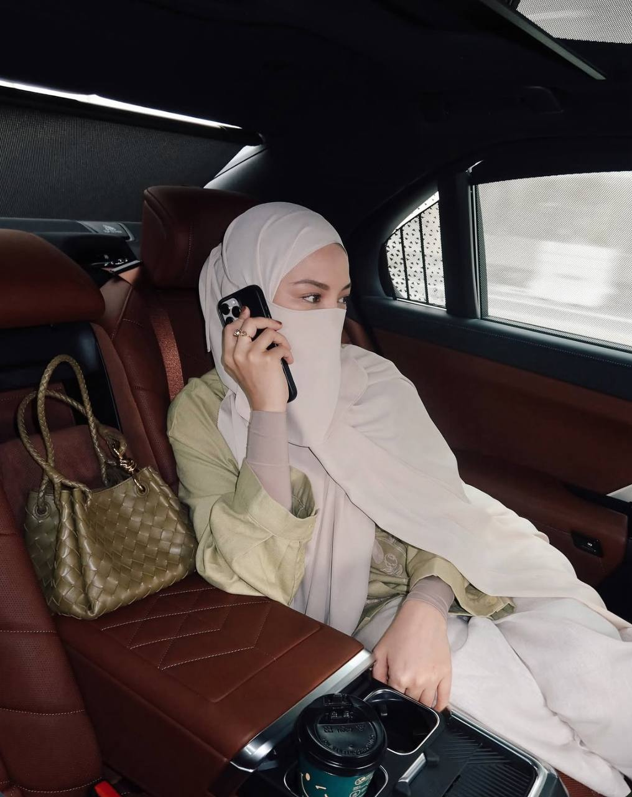
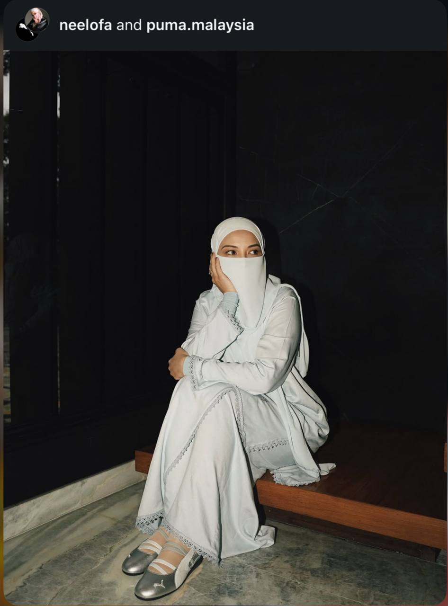

These are the people that I truly admire, who inspire me, motivate me, and bring light into my life in the most beautiful way.
Their passion, strength, and dedication constantly remind me to keep moving forward even during difficult times.
Through their journey, I learn to believe in myself, to grow, and to embrace every moment with confidence and hope. ✨💗



Sofea Shra ✨
Content Creator & Makeup Enthusiast 💄✨
I really enjoy watching Sofea’s content on TikTok, especially the way she interacts with her audience and keeps them engaged through her posts.
I started admiring her during Ramadan 2025, and since then, I’ve continued to follow her journey.
She inspires me a lot, especially in the world of makeup.
Her tutorials are creative, easy to follow, and I love how she shows different ways to match makeup with various outfits.
She makes beauty feel fun, expressive, and accessible for everyone. 💄✨




Neelofa 🌸
Actress, Entrepreneur & Television Host ✨
I started admiring Neelofa in 2017 when I watched her in the drama "Suri Hati Mr Pilot."
Since then, I have been inspired by her growth and achievements.
She is not only talented in acting but also a successful entrepreneur who has built her own brand.
What I admire most is how she represents Malaysia on an international level and continues to inspire many people with her confidence, determination, and strong mindset.
She truly shows that with passion and effort, we can achieve great success. ✨
Byeon Woo Seok is a Korean actor that I truly admire.
I started liking him after watching the K-drama "Lovely Runner," where he impressed me with his acting and emotional expressions.
In that drama, he also sang the song "Sudden Shower," which I absolutely love and still listen to often.
Currently, I am watching another drama he stars in, and it makes me appreciate his talent even more.
His charm, dedication, and presence make him someone I truly admire. 🎬✨